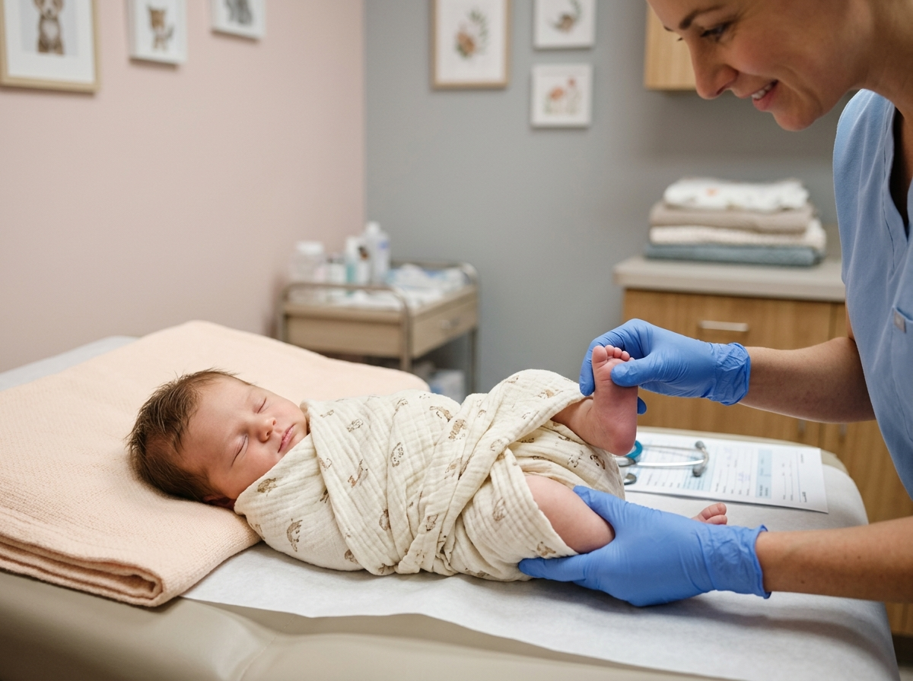
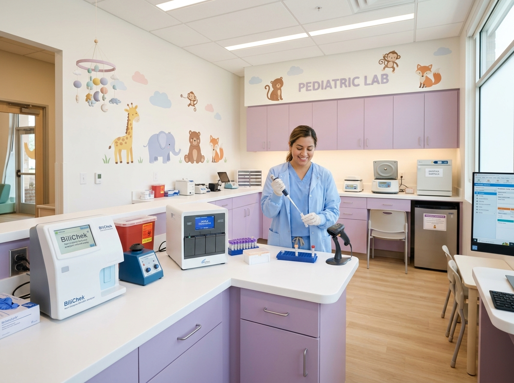

From peaceful newborn well-checks to gentle milestone immunizations, we combine AAP medical rigor with soothing sensory-calm exam suites. Designed so children feel safe and parents feel completely heard.
Select each clinical phase to view our fear-free standard:
Phase 1 • Warm Sensory Welcome & Instrument Warmers
No cold stethoscopes. We let little ones inspect child-safe tools, explore the tactile play area, and acclimate before clinical checks begin.
Phase 2 • Unhurried 45-Minute Physician Consultation
4x the national average. Ample time for complete head-to-toe milestone exams, lactation advice, sleep guidance, and open parent discussions.
Phase 3 • Buzzy® Vibration Pain-Free Immunization
Zero-tears clinical protocol using high-frequency cooling vibration to block pain gate signals, administered while resting safely in parent lap.
Phase 4 • Same-Day Digital Charting & Lab Sync
Instant CDC milestone growth percentiles, vaccination certificates, and rapid lab results synced directly to your secure parent portal.
A well-child checkup at First Steps is never a rushed 10-minute glance. We dedicate 35 to 45 minutes to every appointment so parents can openly discuss sleep cycles, feeding concerns, and developmental milestones in a calm, welcoming space.

Lactation support, umbilical check, safe swaddling & non-invasive bilirubin screening.
Head control, rolling milestones, iron nutrition, and peaceful immunization boosters.
Walking balance, pincer grasp, first words, sensory regulation, and fingerstick hemoglobin.
Vision & audiometry screening, school readiness, behavioral confidence & sports physicals.
Buzzy vibrating cold pads block pain signals from traveling to the brain using gate control theory.
For infants under 6 months, oral sucrose drops naturally trigger endorphin release to soothe comfort.
No restraining tables. Children sit comfortably on mom or dad’s lap receiving warm hugs throughout.
Every child receives a bravery medal, colorful sticker, and heartfelt applause from our clinical team.
Vaccines are essential to shield children from preventable illness, but the experience should never create lasting medical trauma. Under the leadership of Dr. Julian Reed (Preventive Health & Immunology Chair), our nurses specialize in pain-minimized delivery.
Beyond routine checkups, our hospital wellness center hosts comprehensive on-site therapy gyms and point-of-care laboratory suites.
Led by Dr. Alexei Rostov and Dr. Clara Bennett, our padded sensory gyms help infants and young children master rolling, crawling, walking, and sensory balance through joyful play equipment.

No waiting days for anxious lab results. Our hospital diagnostic facility provides rapid, accurate tests designed specifically for pediatric micro-samples with zero adult intimidation.
Explore our clinical research repository to understand developmental milestone percentiles, immunization antibody mechanics, and sensory therapy protocols written by our physicians.
Explore Pediatric Insights HubEverything you need to know about our hospital wellness appointments and care protocols.
Unlike standard clinics that rush through appointments in 10 minutes, our well-child visits are scheduled for a full 35 to 45 minutes. This ensures ample unhurried time for thorough physical checks, developmental screenings, and addressing all parental questions.
Our nurses are specifically certified in the Zero-Pain Comfort Protocol. We use topical numbing, vibration gate therapy (Buzzy), and playful distractions so most children barely notice the injection. We also allow children to stay swaddled on a parent’s lap throughout.
Yes! First Steps is in-network with major commercial health insurance providers, Medicaid, and child health plans. Well-child checkups and CDC-scheduled immunizations are typically covered at 100% with no co-pay under preventive healthcare guidelines.
Yes. All measurements, percentiles, and official immunization records with downloadable school/daycare certificates are instantly synced to your secure Family Portal dashboard.